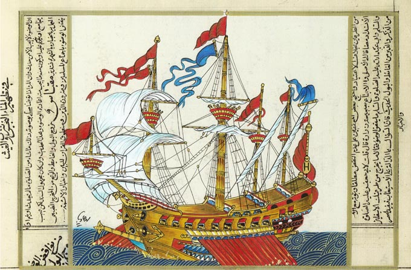
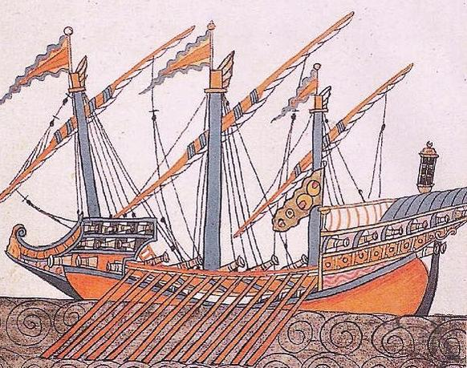
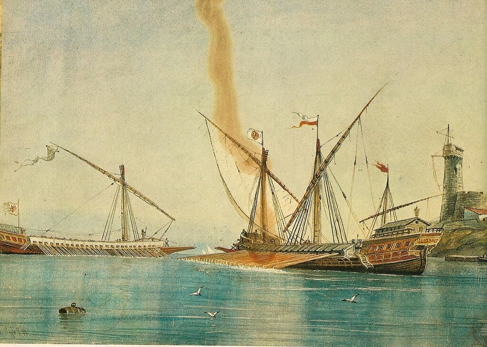
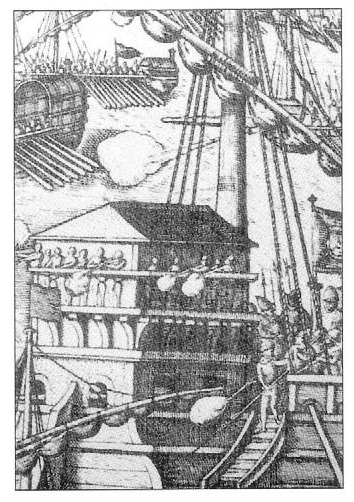

Турецкий галеас (мавна) – комбинация венецианского галеаса и кога (коки). Репродукция с турецкого манускрипта
Проблемы турецкого флота были во сто крат сложнее, чем у его христианского противника. В общей сложности в Стамбул под командованием Улудж Али вернулось пятьдесят кораблей. Плюс шестнадцать кораблей и судов пришли 3 ноября из-под Фамагусты. И хотя первые принесли с собой штандарт Мальтийского ордена, а вторые были под завязку нагружены награбленным на Кипре добром, это не могло заменить боеспособный флот. Требовались срочные меры по восстановлению корабельного состава и набору новых экипажей для галер.
Улудж Али, еще вчера опасавшийся за свою голову, а сегодня ставший капудан-пашой всего турецкого флота, явился к Великому визирю Соколлу Мехмед-паше со своими сомнениями в отношении возможности восстановления полноценного флота к кампании 1572 года. Необходимо было построить как минимум сто пятьдесят новых галер и восемь галеасов, или, как их называли турки, мавн. При мобилизации всех возможностей империи, считал капудан-паша, задачу строительства этих кораблей решить можно. Но практически нереально за это время их оснастить: требовались новые якоря, рангоут, такелаж, производство которых обходится очень дорого. Великий визирь ответил своему адмиралу, и этот ответ вошел во все сочинения морских историков, описывающих ту эпоху:
«Дорогой паша! Мощь и ресурсы Блистательной Порты так велики, чтое если даже будет приказ отлить якоря из серебра, снасти изготовить из шелка, а паруса из атласа – он будет исполнен. Что бы Вам ни потребовалось для кораблей – лишь только скажите мне об этом.»
Не уникальный случай в мировой истории, не правда ли. Приходит на ум история создания нашей атомной бомбы.
Ответ капудан-паши можно и не приводить, он в духе всех верноподданнических ответов во все времена:
«Я безусловно знал, что Вы сможете воссоздать самый совершенный флот.»
Итак, началось строительство нового турецкого военного флота. За точку отсчета мы можем взять донесение байло Венеции в Константинополе Маркантонио Барбаро (мы подробно писали о нем раньше) от 5 января 1572 года. Согласно этому документу турки имели 45 галер на воде, 11 старых галер и 14 новых на берегу, 8 галер в доках, 11 – на внешнем рейде плюс восемь фуст, Итого 97 гребных боевых кораблей. В стадии строительства находились 102 галеры на верфях Анатолии и «Греции» (к Греции Барбаро относит Варну).
На землях султанского сада было построено восемь новых крытых эллингов. Лес для новых галер рубили по всей территории Османской империи и, не дожидаясь его просушки, сырым везли на верфи. В результате прочность и долговечность новых кораблей была низкая. Приходилось также использовать некондиционную пеньку, поэтому оснащение новых галер такелажем отставало от графика. Полным ходом шла отливка новых тридцатифунтовых орудий, бронзу для которых получили в результате переплавки колоколов с христианских церквей.
Как уже отмечалось, турки, впечатленные огневой мощью венецианских галеасов в сражении при Лепанто, решили пополнить свой флот кораблями этого типа, которые они называли мавна.

Турецкая мавна
Об истории этих турецких кораблей мы писали раньше. Но при постройке своих мавн как варианта венецианского галеаса образца 1571 года турки не добились приемлемых результатов. Они построили большие галеры с большим количеством пушек, способных вести огонь по всем направлениям, но это были совсем не галеасы, их мореходность была очень низкая. Известный итальянский корабельный мастер Помпео Флориани писал, что даже в 1580 году турецкие мавны не достигли уровня венецианских галеасов, при постройке которых были проведены многочисленные эксперименты и испытания, позволившие добиться высоких качеств нового корабля. Не только турки пришли к печальному итогу в своих попытках воспроизвести конструкцию венецианского галеаса. Даже тосканцы, которые для подобной цели построили специальный арсенал на острове Эльба, не смогли добиться удовлетворительного результата и в конце концов вынуждены были пригласить моряков и штурманов из Венеции, чтобы обеспечить приемлемую мореходность своих новых кораблей. Испанцы, как представляется, были более успешны в этой области. По крайней мере англичане были впечатлены четырьмя испанскими галеасами из состава Непобедимой армады в 1588 году.

Испанский галеас и венецианская галера. С фрески на стене зала морских сражений в монастыре Эскориал.
Пополнение флота Османской империи личным составом также было отягощено множеством проблем. Сипахи, понесшие тяжелые потери во время битвы при Лепанто, не готовы были провести еще один сезон в море. С большим трудом удалось мобилизовать 4 359 сипахов и около трех тысяч янычар. Но для нового флота требовалось как минимум 20 тысяч человек. Причем, по опыту Лепанто нужны были аркебузиры, а не лучники, которые уже не могли на равных биться с оснащенным огнестрельным оружием противником.

Испанские аркебузиры во время битвы при Лепанто. Немецкая гравюра 1575 года.
На каждую галеру требовалось до 150 солдат: по два аркебузира и одному лучнику на банку. Медленно, но неуклонно морская пехота турок проходила перевооружение на огнестрельное оружие, но процесс этот все же тормозился нежеланием османских воинов отказываться от своих традиций. Тимариоты, к примеру, так и не приняли огнестрела.
Но несмотря на все трудности и неизбежные недочеты к лету 1572 года у турок были готовы выйти в море до 150 новых галер.